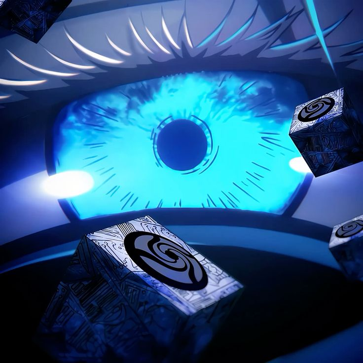

Os Seis Olhos sao parte essencial do que faz o Gojo parecer unico. Eles reforcam a ideia de precisao absurda, leitura do combate e dominio da energia amaldicoada de um jeito que quase ninguem consegue acompanhar. E por isso que ele inspira tanta confianca quando esta do lado do bem, mas tambem e por isso que a arrogancia dele consegue irritar tanto.